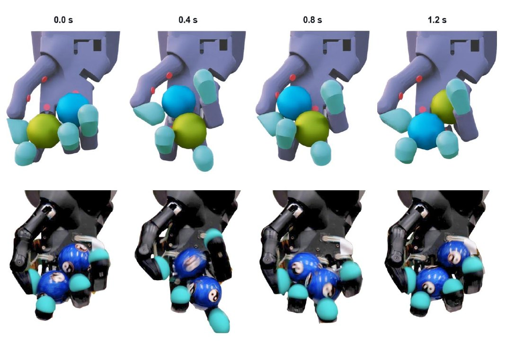
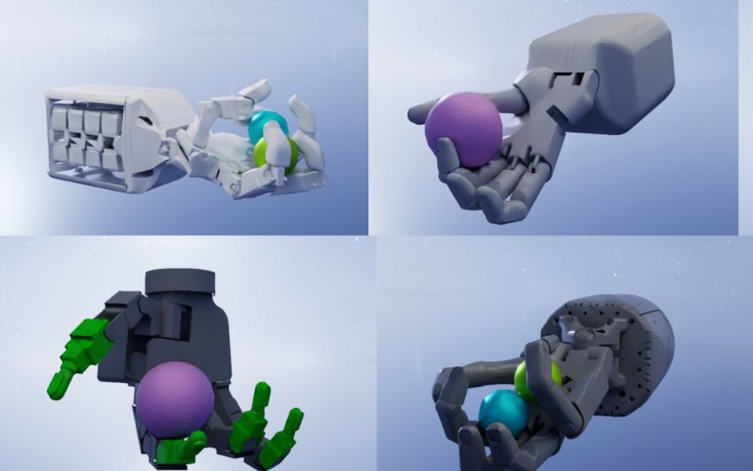
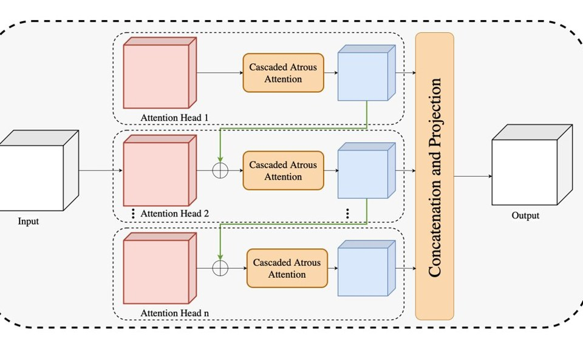
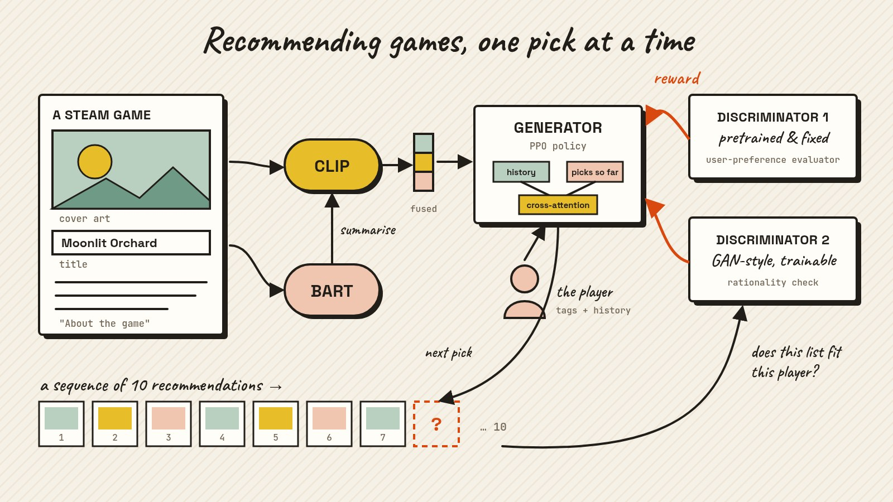

'26

Also on Google Scholar. BibTeX entries below are assembled from the Scholar listing — check them against the published version before citing.


@misc{miller2026roto,
title = {roto 2.0: The Robot Tactile Olympiad},
author = {Miller, E. and Reddy, J. and Deshmukh, A. and McInroe, T. and Abel, D. and Mac Aodha, O. and others},
year = {2026},
eprint = {2605.21429},
archivePrefix = {arXiv}
}

@inproceedings{deshmukh2025cascaded,
title = {A Cascaded Dilated Convolution Approach for Mpox Lesion
Classification},
author = {Deshmukh, Ayush},
booktitle = {DAGM German Conference on Pattern Recognition},
series = {Lecture Notes in Computer Science},
publisher = {Springer},
pages = {18--27},
year = {2025},
doi = {10.1007/978-3-032-12840-9_2}
}

@inproceedings{deshmukh2026multimodal,
title = {Multimodal Reinforcement Learning for Game Recommendation using
Dual-Discriminator {PPO} Framework},
author = {Deshmukh, Ayush and Kelkar, Siddharth and M, Anand Kumar},
booktitle = {2026 18th International Conference on COMmunication Systems
\& NETworks (COMSNETS)},
year = {2026},
doi = {10.1109/COMSNETS67989.2026.11418281}
}